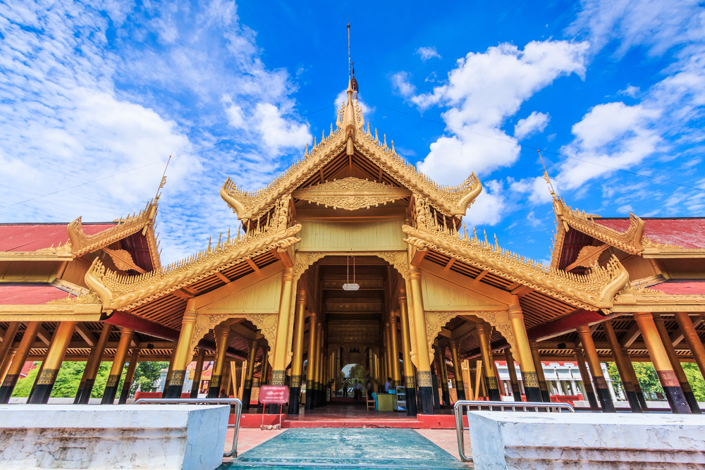
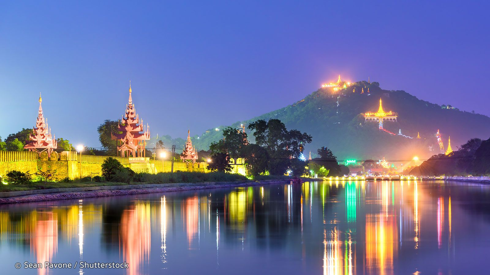
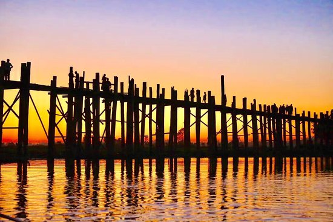

MANDALAY
Mandalay is the second-largest city of Myanmar, located on the east bank of Ayeyarwady river. It is an important economic centre of the northern side of Myanmar and is regarded as a cultural centre of the country. The city has been named after the nearby Mandalay Hill. Mandalay was the former capital of the country and has a rich history behind it. It was founded at the foothills of the Mandalay hill in 1857 by King Mindon. The city was founded to fulfil a prophecy of founding a metropolis of Buddhism on the occasion of the 2400th anniversary of setting up of Buddhism.
Popular Places
|  | Royal Palace The Mandalay Palace located in Mandalay, Myanmar, is the last royal palace of the last Burmese monarchy. The palace was constructed between 1857 and 1859 as part of King Mindon's founding of the new royal capital city of Mandalay. The plan of Mandalay Palace largely follows the traditional Burmese palace design, inside a walled fort surrounded by a moat. The palace itself is at the centre of the citadel and faces east. All buildings of the palace are of one storey in height. The number of spires above a building indicated the importance of the area below. |
|---|
Mandalay Hill Mandalay Hill is a 240 metres (790 ft) hill that is located to the northeast of the city centre of Mandalay in Myanmar. |
 |
|---|
|  | U Bein Bridge U Bein Bridge is a crossing that spans the Taungthaman Lake near Amarapura in Myanmar. The 1.2-kilometre (0.75 mi) bridge was built around 1850 and is believed to be the oldest and (once) longest teakwood bridge in the world.Construction began when the capital of Ava Kingdom moved to Amarapura,and the bridge is named after the mayor who had it built.It is used as an important passageway for the local people and has also become a tourist attraction and therefore a significant source of income for souvenir sellers.It is particularly busy during July and August when the lake is at its highest. |
|---|
Mingun A compact riverside town in Sagaing Region, Mingun lies on the Ayeyarwady River on the west bank about 10km from Mandalay. It is a popular excursion and worth spending at least half a day exploring its impressive sights. Arriving by boat from Mandalay is the most enjoyable although you can also arrive by road from Sagaing. Mingun is of immense historical significance and holds monuments which stand evidence of history. One can explore the Mingun Bell, Mingun Pahtodawgyi and the Hsinbuume Pagoda n Mingun. |
|---|
Innwa Innwa, (also known as Ava) the capital of several kingdoms between the 14th and 19th century, is located on the banks of both the Ayeyarwady and Myitnge rivers. It is about 21km from Mandalay and its main attractions are the 19th-century MahaAungMyeBonzan Monastery and the BagayaKyaung Monastery supported by nearly 300 huge teak stilts built around 1830. It is known for its intricate woodcarvings. |
|---|

|
Pyin Oo Lwin At an altitude of 1,070m, Pyin Oo Lwin is the nearest hill station with a cool alpine climate. It is the perfect escape from the heat of the Mandalay city. The refreshing colonial hill station of Pyin Oo Lwin was a summer retreat during British rule. It takes around 1 hour 30 minutes to reach Pyin Oo Lwin from Mandalay and can be reached through road or train. |
|---|